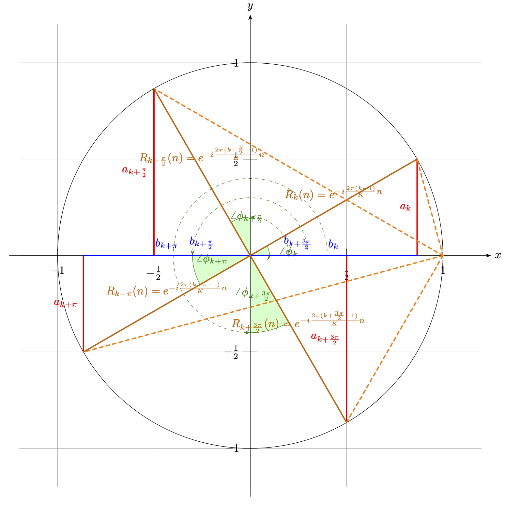
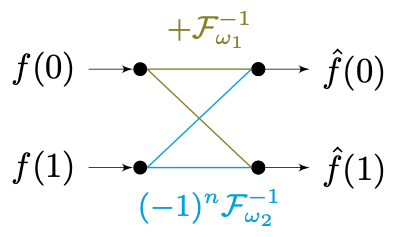
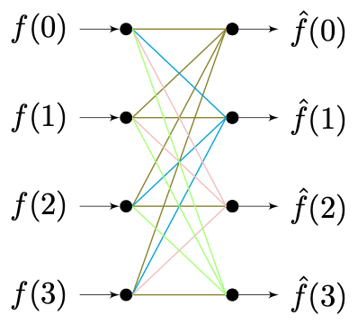
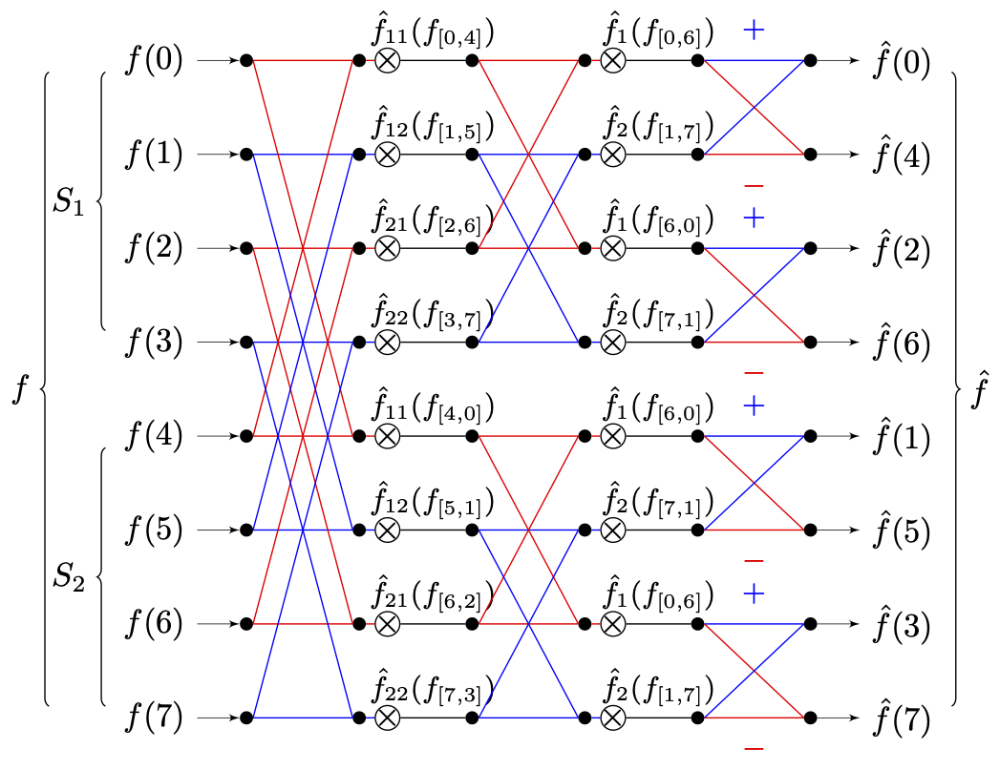
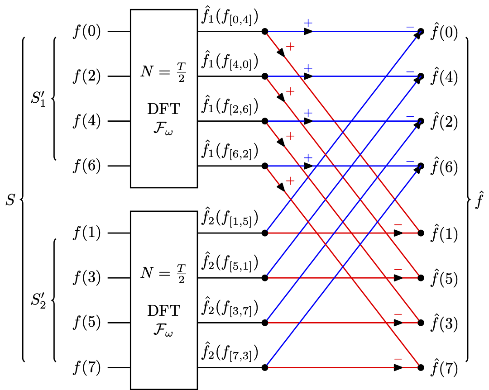
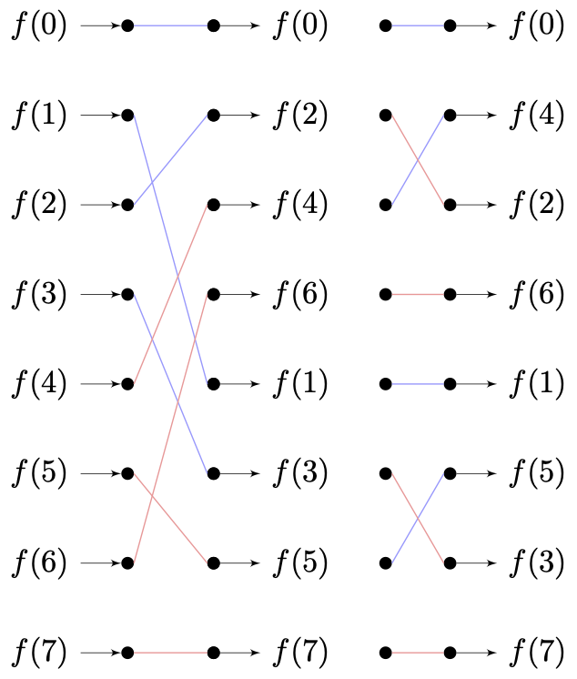
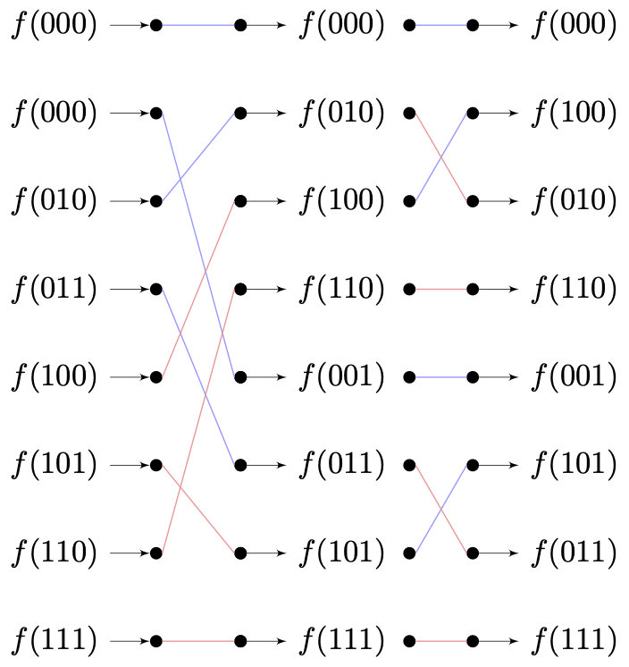

快速傅立叶是对离散傅立叶的数学逼近。其旨在通过有限点的分布拟合，快速逼近离散傅立叶变换结果。
快速傅立叶变换最早由 高斯（Carl Friedrich Gauss，1777 - 1855） 为了解决天文学中有关于智神星（Pallas）和婚神星（Juno）的位姿计算问题，而在 1805 年提出的 [8] [9] 。不过由于种种意料之外的因素，让该论文并没有被及时的发表。因此，论文在当时也没有获得太多的关注。直到计算机开始兴起，有关傅里叶变换等算法的更为低时间复杂度的要求变的迫切，才让后续研究者们又一次察觉到了这一篇文献（以及包括 19 世纪中叶和 20 世纪初的旁类研究）的贡献 [9] 。
1965 年，来自 IBM 普林斯通实验室的 詹姆士·库利（James Cooley） 和来自普林斯通大学的 约翰·图奇（John Tukey） 教授，联合发表了基于快速傅里叶变换的机器实现 [10] ，首次将该算法迁移到了计算机上。他们的研究提出了，通过采用分治法的思想来减少变换所需步数。这成功的使得，多维信号分析所用的傅立叶算法的时间复杂度算法，降至 。促进了数字信号处理（DSP）和计算机图形学的技术更新 [11] 。所以，为纪念两位的贡献，这套程序化的快速傅里叶变换（FFT [Fast Fourier Transform]）方法论 ，被称为 库利-图奇算法（Cooley-Tukey Algorithm） 。库利-图奇算法目标是一维信号，不过高维信号是可以被拆解为低维信号的向量积的，因此 并不影响其泛化 。
在库利-图奇算法提出的时候，分治法已经被广泛的用来做计算机数组求最大值（Max）和排序（Sort）的处理当中。虽然离散的数组和周期信号之间，在信息密度和特征上存在较大差异。但如果考虑到周期信号沿传播维度重复，和傅里叶变换傅里叶基的特征，会发现：
如果将一维信号离散傅里叶变换的有限基底函数族 Fω 构成的傅里叶基看作最小元，那么对其在时域上进行分组重排，也是可行的。从而使信号的一组基底函数基，能够以树状结构分类，并拆解特征表示原信号函数。
这就是库利-图奇算法的关键，在后续的算法的演进过程中逐步被提炼，形成了时域抽取这一核心概念 [11] 。
时域抽取（DIT [Decimation-in-Time]）
时域抽取（DIT [Decimation-in-Time]）是从时域（TD [Time Domain]）对一维信号进行可逆解构的一种数学工具。 它的工作流包含有两个阶段：
分组离散傅立叶（Grouped DFT） 和 旋转因子转换（Rotation Factor Convert）
时域抽取 - 分组离散傅立叶（Grouped DFT）
分组离散傅立叶（Grouped DFT） 是指，在信号的单个周期 T 内，以等间距有限次取 个原始离散采样后。将周期内所有采样点信息以 step=KT=N 的步长等分，得到 K 组顺序连续的子采样分组，依照组别记为样本子集 [S1,S2, ... ,SK] 。每组子集都有 Sk∈[fk((k−1)⋅N), fk(k⋅N)) 的样本取样区间。
此时，记组内索引为 n ，有 n∈[1, N] 。按照顺序从各组中，取组内索引位置为 n 的元素，组成包含数据量为 Fωn 的基底函数 Fωn 的波峰数组。可以逐个拟合，得到一组当前一维信号的有限基底函数族 Fω=[Fω1,Fω2, ... ,FωN] ，记为当前解的最小傅立叶基。根据一维离散傅立叶变换有：
Fω=[Fω1,Fω2,f^(ω)=t=0∑Tf(t)⋅e−iωt ... ,FωN]T=NK⇔ f(t)=K1ω0∑ωNf^(ω)⋅Fω(t)
又因 ωn=T2πn ，强度系数 f^(ω) 与 f(t) 的关系，可以被转换为 f^(n) 与 f(t) 的关系：
f^(ω)=t=0∑Tf(t)⋅e−iωtf(t)=N1ω0∑ωNf^(ω)⋅Fω(t)f^(n)=t=0∑Tf(t)⋅e−iT2πnt→f^(n)=t=0∑Tf(t)⋅e−iT2πnt→f(t)=N1n=1∑Nf^(n)⋅Fω(t)⇔f(t)=N1n=1∑Nf^(n)⋅Fω(t)
带入 K 分组情况（ T=NK ），上式可化为：
f^(n)=k=1∑K(k−1)N∑t=kN−1f(t)⋅e−iT2πnt⇔f(t)=N1n=1∑Nf^(n)⋅Fω(t)
即强度系数 f^(n) 存在展开式：
f^(n)=k=1∑K(k−1)N∑t=kN−1f(t)⋅e−iT2πnt=t=0∑N−1f(t)⋅e−iT2πt⋅n+t=N∑2N−1f(t)⋅e−iT2πt⋅n+ ... +(K−1)N∑t=KN−1f(t)⋅e−iT2πt⋅n=t=0∑N−1f(t)⋅e−iT2πt⋅n+t=0∑N−1f(t+N)⋅e−iT2π(t+N)⋅n+ ... +t=0∑N−1f(t+(K−1)N)⋅e−iT2π(t+(K−1)N)⋅n=k=1∑Kt=0∑N−1f(t+(k−1)N)⋅e−iT2πtn⋅e−iK2π(k−1)n
要点就出现在这里，此时，由于有限基底函数族 Fω=[Fω1,Fω2, ... ,FωN] 的拟合样本选取自各个分组的对应角标数据，则显然任意 Fωi 的周期都有 Ti=ωi2πn≥N 且必然有 TimodN=0 。因此，强度系数 f^(n) 关于 k 的展开式能进一步精简为：
f^(n)=k=1∑K(t=0∑N−1f(t+(k−1)N)⋅e−iT2πtn)⋅e−iK2π(k−1)n=k=1∑Ke−iK2π(k−1)n⋅[(k−1)N∑kN−1∣t f(t)⋅Fω−1(tn)]
记 f^k(n)=∑(k−1)NkN−1∣t f(t)⋅Fω−1(tn) ，则 f^k(n) 即为分组样本子集 [S1,S2, ... ,SK] 在自己的分组样本区间 Sk∈[fk((k−1)⋅N), fk(k⋅N)) 内，进行离散傅里叶变换的分组强度系数结果。而 e−iK2π(k−1)n 在样本顺序 n 给定时，只与所处分组的组序 k 有关，且本身在三角函数空间表现为 n(k−1) 的角度固定值，所以我们记其为旋转因子（Rotation Factor） Rk(n)=e−iK2π(k−1)n 。
将 f^k(n) 、 Rk(n) 带入 f^(n) ，则 f^(n) 最终表现为：
R1(n)f^(n)f^(n)=1=k=1∑KRk(n)⋅f^k(n)=R1(n)⋅f^1(n)+R2(n)⋅f^2(n)+ ... +RK(n)⋅f^K(n)=f^1(n)+R2(n)⋅f^2(n)+ ... +RK(n)⋅f^K(n)
上式就是时域抽取（DIT）有关分组离散傅立叶（Grouped DFT）的通用完整过程。单从公式来看，由于切割了样本集，我们只能通过分组离散傅立叶（Grouped DFT）直接求得原一维信号前 N 个信号量的傅里叶解。反而因为样本不足的问题，无法直接求得剩余的 (K−1)N 个信号量。
那么我们大费周章的这么做有什么用处呢？原因就在于旋转因子间是存在关系的。
时域抽取 - 旋转因子转换（Rotation Factor Convert）
这个问题，需要从复变函数的三角函数特性来回答。记 Rk(n) 变换到三角函数域，其实部为 ak ，虚部为 bk 。则 Rk(n) 可以表示为：
Rk(n)=e−iK2π(k−1)n=ak⋅cos(K2π(k−1)n)+i⋅bk⋅sin(K2π(k−1)n) dt
依此，取 ak 为 y 轴、 bk 为 x 轴。我们假设分组 K=2m ，信号周期 T=2π⋅M 且 Tmod2π=0 ，有此时步长 N=2m−1π⋅M 。为便于说明，我们取 M=1 ， m=1 ，且 n=6π=∠30∘ 来进行绘制。实际上 n 只能取 [1, N] 的整数，但那样会不便于图示，这里取固定角并不影响后续结论。则 Rk(n) 在 akbk 构成的平面坐标系上有如下取值范围：

图 3.1.3-1 旋转因子的三角函数系取值演示
在图像表示下 Rk(n) 的特性更易察觉，当分组 K=2m 且 m≥1 取整时, 单个 2π 周期内，以 N=K2π 可以分为 2m−1 组。每组分组都包涵两个子样本集 [Sk ,Sk+2m−1] ，此时，这两个字样本集旋转因子原点对称，有 Rk(n)=−Rk(n+π)n∈[K2π(k−1), K2πk] 。而对于信号 M>1 时，间隔为 2π 的分组有 2M 组，且旋转因子取值相同，即 Rk(n)=Rk+2π⋅M(n) 。
如果我们取 K=2 ，即 m=1 ，对整体信号的 T 个样本分为两组，两组原点对称有：
f^(n)f^(n+π)=f^1(n)+e−iπn⋅f^2(n) =f^1(n)+R2(n)⋅f^2(n)=f^1(n)+e−iπ(n+π)⋅f^2(n)=f^1(n)−R2(n)⋅f^2(n)
如果我们取 K=4 ，即 m=2 ，对整体信号的 T 个样本分为四组，间隔两两原点对称，即相邻组间实虚轴反转，有：
Rk(n+2π)=[(k−1)%2]⋅(−1)k−1⋅Rk(n)+[(k−1)%2+1]⋅(−i)k−1⋅Rk(n)
则 f^(n) 有 n∈[0, 2π] 范围的表达式：
f^(n)f^(n+2π)f^(n+π)f^(n+23π)=f^1(n)+ R2(n)⋅f^2(n)+ R3(n)⋅f^3(n)+ R4(n)⋅f^4(n)=f^1(n)−iR2(n)⋅f^2(n)− R3(n)⋅f^3(n)+iR4(n)⋅f^4(n)=f^1(n)− R2(n)⋅f^2(n)+ R3(n)⋅f^3(n)− R4(n)⋅f^4(n)=f^1(n)+iR2(n)⋅f^2(n)− R3(n)⋅f^3(n)−iR4(n)⋅f^4(n)
不论上述哪一种分组方法，我们都可以将求解范围从有限子集 Sk 中 n∈[K2π(k−1), K2πk] 的离散傅立叶结果，拓展到完整信号周期 T 。而只需要求任意一有限子集 Sk 的傅立叶基即可。
根据 K=2m 的不同取值，时域抽取（DIT）过程的时间复杂度，通过计算分片耗时，能够简单得到为 O(KK−1n⋅log2mn)=O(K⋅2m−1K−1n⋅log2n) 。
显然，O∣K=2=O(21n⋅log2n) 、 O∣K=4=O(83n⋅log2n) 虽然分组间耗时差异不大，但相较于直接对一维信号使用离散傅里叶变换（DFT）的 O(n2) 耗时来说，直接减少了一个数量级。这即是快速傅立叶的 “快”。
对于 K 取不同值时的时域抽取（DIT），为了做区分，根据 K 值的不同被分别称为 双模时域抽取（Radix-2 DIT） 和 四模时域抽取（Radix-4 DIT） 。同理，我们将 K=2 时的库利-图奇算法称为 双模快速傅里叶变换（Radix-2 FFT），将 K=4 时的库利-图奇算法称为 四模快速傅里叶变换（Radix-4 FFT）。两者差异如上，主要即是在划分导致推算上的不同。
至于为什么快速傅里叶变换又被称为蝴蝶法这点。则和经过时域抽取（DIT）处理后，有限基底函数族 Fω=[Fω1,Fω2, ... ,FωN] 的对应强度系数 f^(ω) 与分组 f^k(n) 的换算方式有关。
处理单元最小化 - 交叉求值与“蝴蝶”的由来
以 双模快速傅里叶变换（Radix-2 FFT） 为例。在最简情况下，当样本取 T=2 ，有 K=2 且 N=1 ，基底函数族 Fω=[Fω1,Fω2] ，此时：
∵f^k(n)∴f^(n)=(k−1)N∑kN−1∣t f(t)⋅Fω−1(tn)=f^1(n) + (−1)n⋅R2(n)⋅f^2(n)=Fω1−1(n)⋅f(0)+ Fω2−1(n)⋅f(1)= f(0) + (−1)n⋅Fω2−1(n)⋅f(1)
显然，对于足够小的样本，其库利-图奇解的旋转因子 Rk(n) ，就是它所对应的傅里叶基函数与转置因子的乘机，即：
Rk(n)=(−1)n⋅Fω2−1(n),k∣n∈int[0,1]
我们在傅里叶变换章节开始时提到过，傅里叶变换从空间投影变换角度，可以表示为：
N⋅F=FωT⋅F=⎣⎢⎢⎡Fω1Fω2⋮Fωn⎦⎥⎥⎤⋅[f^1,f^2, ... ,f^n]
那么，在引入了转置因子的情况下，原信号 f(n) 与 f^(n) 的关系就可以被写为：
[f(0)f(1)]=[1,+Fω21,−Fω2]⋅[f^(0)f^(1)]=[1,1,+1−1]⋅[Fω1,Fω2]⋅[f^(0)f^(1)]
而这个过程如果换到拓扑图表示，就是大名鼎鼎的 “蝴蝶” 流造型了 （注意，颜色表示转子输出方向） ：

同理，当采用 四模快速傅里叶变换（Radix-4 FFT） 时，有在最简情况下样本取 T=4 。有 K=4 且 N=1 ，基底函数族 Fω=[Fω1,Fω2,Fω3,Fω4] 。省略同质的推导过程，有原信号 f(n) 与 f^(n) 的关系：
⎣⎢⎢⎡f(0)f(1)f(2)f(3)⎦⎥⎥⎤=⎣⎢⎢⎡1,1,1,1,−−1,i,1,i,−−1,1,1,1,−−1i1i⎦⎥⎥⎤⋅[Fω1,Fω2,Fω3,Fω4]⋅⎣⎢⎢⎡f^(0)f^(1)f^(2)f^(3)⎦⎥⎥⎤
四模的 “蝴蝶” 流造型如下 （注意，颜色表示前级数据来源） ：

可见，单元的最小化抽象是通用的方法论。 对于多样本情况，只需要层层分解组装即可完成整体的快速处理。由于时间差异并不明显，但转置矩阵复杂度差异较大，因此我们一般选择 双模（Radix-2） 简化整体处理过程。
分批处理层级树 - 单元组装与完整流水线
和简单情况不一样的是，更多的样本采样使得我们没办法通过一次计算就得到最终结果。而在之前的推导过程中我们提到，对于不同子样本集抽参求解 f^k(n) 的过程，其本质也是一个傅里叶变换，只不过在解构过程中被我们以整体进行了代指换元。因此，随着 T=2l 与 K=2m 的变化，对信号处理的层数 Layer 也会产生变更有：
Layer=logK(T)=ml
假设样本取 T=4 ，有 K=2 ，则 N=2 ，此时所需层数为 Layer=2 。根据其上我们的分析可知，存在整合后的基底函数族为：
Fω=[Fω1,Fω2]=[Fω11,Fω12,Fω21,Fω22]
使得原信号 f(n) 与 f^(n) 的关系为：
∵f^k(n)∴f^1(n)f^2(n)∴f^(n)=(k−1)N∑kN−1∣t f(t)⋅Fω−1(tn)mark:Ri(n)⋅Fωij−1(n)=Rij(n)∣(T=4,K=2)= Fω11−1(n)⋅f1(0)+ (−1)n⋅Fω12−1(n)⋅f1(1)=f(0) + (−1)n⋅Fω12−1(n)⋅f(2)=DFT(f1(n))= Fω21−1(n)⋅f2(0)+ (−1)n⋅Fω22−1(n)⋅f2(1)=f(1) + (−1)n⋅Fω22−1(n)⋅f(3)=DFT(f2(n))=[f^1(n)+ (−1)n⋅R2(n)⋅f^2(n) ]∣(T=8,K=2)= R1(n)⋅DFT(f1(n)) + (−1)n⋅R2(n)⋅DFT(f2(n))= R1(n)⋅Fω11−1(n)⋅f(0) + (−1)n⋅R1(n)⋅Fω12−1(n)⋅f(2) + (−1)n⋅R2(n)⋅f(1) + R2(n)⋅Fω22−1(n)⋅f(3)= R11(n)⋅f(0)+ (−1)n⋅R12(n)⋅f(2)+ (−1)n⋅R21(n)⋅f(1)+ R22(n)⋅f(3)
同理，当 T=8 ，有 K=2 ，则 N=4 ，此时所需层数为 Layer=3 。存在整合后的基底函数族：
Fω=[Fω1,Fω2]=[Fω11,Fω12,Fω21,Fω22]=[Fω111,Fω112,Fω121,Fω122,Fω211,Fω212,Fω221,Fω222]
使得原信号 f(n) 与 f^(n) 的关系为 （省略同质化过程） ：
f^(n)== R11(n)⋅f^11(n)∣0,4+ (−1)n⋅R12(n)⋅f^12(n)∣1,5+ (−1)n⋅R21(n)⋅f^21(1)∣2,6+ R22(n)⋅f^22(3)∣3,7[R111(n)⋅f(0) + (−1)n⋅R112(n)⋅f(4)+ R221(n)⋅f(2)+ (−1)n⋅R222(n)⋅f(6)]feven+[R121(n)⋅f(1) + (−1)n⋅R122(n)⋅f(5)+ R321(n)⋅f(3)+ (−1)n⋅R322(n)⋅f(7)]fodds
此时的“蝴蝶”流造型，就要复杂一些了 ：

从图上可知，每层都可以被分割为 2la−1 个蝶形单元，其中 la 为当前层级。而完整的计算，则需要历经共计 2l/m−1 个单元才能完成。
如果我们开始就对总样本集 S ，按照奇偶样本分为 S1′=[f(0), f(2), f(4), f(6)] 和 S2′=[f(1), f(3), f(5), f(7)] 这两个子集。使单一分组求单一解，来方便分离的离散傅里叶变换调用。那么整个蝴蝶图就变成如下样子了 （同色线表示相同流向） ：

结果同样一致，可见奇偶分割实质上是一个以 K=2 为步长的抽样再迭代计算的过程。这点也能够从 K=4 时，四模对原数据取样 T=8 会使 f(n) 被分为：
f^(n)=[R11(n)⋅f(0) + (−1)n⋅R12(n)⋅f(4)]f1/4+[R21(n)⋅f(1) + (−1)n⋅R22(n)⋅f(5)]f2/4+[R31(n)⋅f(2) + (−1)n⋅R32(n)⋅f(6)]f3/4+[R41(n)⋅f(3) + (−1)n⋅R42(n)⋅f(7)]f4/4
的情况，得到间接的阐明。
因此，我们可以通过封装固定 K 时的最小蝶形单元，采用递归的方式来计算 f(n) 与 f^(n) 的相互转换。分组的产生，是由顺序输入在算法作用下经过每层的蝶形单元处理后，导致的必然结果。是一个自然而然的过程而并非强行去做的设定，切勿本末倒置。
而我们期望的是有序的输出，这也就产生了对输入进行排序的要求。
基于数据的优化 - 位反转（Bit Reversal）输入索引重排
经过前面的一系列分析，不难归纳得到：最终算法的输出顺序，是原序列经过 Layer−1 层反转的结果。即每个蝶形单元，会反转当前对应字样本周期跨度的一半。
还是采用当 T=8 ，有 K=2 时的情形。我们将所有的处理过程排除，以原样本数据序列角标的传递过程来标记处理流，则有：

当代计算机采用的二进制计数，我们将上述样本角标 采用二进制表示 ，有：

这一现象即被称为 位反转（Bit Reversal）。我们可以利用这一特点，在工程运算过程中每个蝶形单元的数据装配处，以顺序序列对应位反转的角标来取用输入数据，从而保证迭代运算结果的顺序。
一维快速傅立叶变换（1D-FFT）的 C 语言实现
现在，万事俱备。可以进行代码实现了。先用伪码缕清算法程序化思路：
/**
* 1D-FFT [Fast Fourier Transform]
* [How to Use]
* <case:>
* Fo[T] = {...};
* Fn[T] = {};
* fft_1d(&Fo, &Fn, T);
* [logistic]
* {
* result = []; // as byte array
* // do Bit-Reversal
* Fo_sorted = bit_reversal(Fn, Fn, T);
* // do DIT:
* for (int layer_at_ = 0; layer_at_ < max_layer; layer_at_++) {
* layer_step_ = 2 ^ layer_at;
* // do Butterfly (each layer):
* for (int slice_idx_ = 0; slice_idx_ * 2 * step_ < size_; slice_idx_++) {
* for (int inner_idx_ = 0; inner_idx_ < step_; inner_idx_++) {
* Rotator Rn = complex_from_angle(PI * inner_idx_ / layer_step_)
* then Calculate Cross(Butterfly-2x2 Matrix):
* slice_out_[inner_idx_] = {
* slice_data_[inner_idx_] + slice_data_[inner_idx_ + step_] * R_
* };
* slice_out_[inner_idx_ + step_] = {
* slice_data_[inner_idx_] - slice_data_[inner_idx_ + step_] * R_
* };
* }
* layer_out_[slice_idx_] = slice_out_;
* }
* }
* return result;
* }
* @param Fo Original Function input array
* (already sampled by T as count-of-time-slice)
* @param Fn Fourier Basis
* (already sampled by N as count-of-frequency-slice)
* @param T Periodic of Fo, Number of Time Slice,
* (also as Number of Frequency Slice for FFT)
*/
依然，快速傅立叶变换也需要有逆变换（IDFT [Inverse Fast Fourier Transform]），来帮我们进行数据还原：
/**
* 1D-IFFT [Inverse Fast Fourier Transform]
* [How to Use]
* <case:>
* Fo[T] = {};
* Fn[T] = {...};
* fft_1d(&Fo, &Fn, T);
* [logistic]
* {
* result = []; // as byte array
* // do Bit-Reversal
* Fo_sorted = bit_reversal(Fn, Fn, T) / T; dont forget divide N(num equal T) [<= key]
* // do DIT:
* for (int layer_at_ = 0; layer_at_ < max_layer; layer_at_++) {
* layer_step_ = 2 ^ layer_at;
* // do Inverse Butterfly (each layer):
* for (int slice_idx_ = 0; slice_idx_ * 2 * step_ < size_; slice_idx_++) {
* for (int inner_idx_ = 0; inner_idx_ < step_; inner_idx_++) {
* Rotator Rn = complex_from_angle(-i * PI * inner_idx_ / layer_step_) [<= key]
* then Calculate Cross(Butterfly-2x2 Matrix):
* slice_out_[inner_idx_] = {
* slice_data_[inner_idx_] + slice_data_[inner_idx_ + step_] * R_
* };
* slice_out_[inner_idx_ + step_] = {
* slice_data_[inner_idx_] - slice_data_[inner_idx_ + step_] * R_
* };
* }
* layer_out_[slice_idx_] = slice_out_;
* }
* }
* return result;
* }
* @param Fo Original Function input array
* (already sampled by T as count-of-time-slice)
* @param Fn Fourier Basis
* (already sampled by N as count-of-frequency-slice)
* @param T Periodic of Fo, Number of Time Slice,
* (also as Number of Frequency Slice for FFT)
*/
到此，快速傅里叶变换的 工程优势 就体现出来了。从上面的工作流可以看出，FFT 和 IFFT 唯一的实现上的不同的地方，就在于两点：
- 分片计算均值 ，这个是傅里叶变换的通性；
- 旋转因子互逆 ，转换三角函数时的对称性；
这正是我们在之前推倒时，双模快速傅里叶变换（Radix-2 FFT）所利用的最为显著的特征。而其他部分的计算，则可以用相同的流水线进行统一。
所以，一维双模快速傅里叶变换（1D Radix-2 FFT）的工程化 ，并没有想象中的复杂：
#include "stdio.h"
#include "math.h"
#define PI 3.1415926f
typedef struct Complex {
double re_;
double im_;
Complex operator+(const Complex &b_) const {
Complex result_;
result_.re_ = re_ + b_.re_;
result_.im_ = im_ + b_.im_;
return result_;
}
Complex operator-(const Complex &b_) const {
Complex result_;
result_.re_ = re_ - b_.re_;
result_.im_ = im_ - b_.im_;
return result_;
}
Complex operator*(const Complex &b_) const {
Complex result_;
result_.re_ = re_ * b_.re_ - im_ * b_.im_;
result_.im_ = re_ * b_.im_ + im_ * b_.re_;
return result_;
}
} Rotator, FBasis;
void digital_convert(double *digital_, Complex *complex_, size_t size_, bool inverse = false) {
if (!inverse) {
for (int i = 0; i < size_; i++) {
complex_[i] = {digital_[i], 0};
}
} else {
for (int i = 0; i < size_; i++) {
digital_[i] = complex_[i].re_ / size_;
}
}
}
void bit_reversal(Complex *input_, FBasis *result_, size_t size_, bool inverse = false) {
for (int i = 0; i < size_; i++) {
int k = i, j = 0;
double level_ = (log(size_) / log(2));
while ((level_--) > 0) {
j = j << 1;
j |= (k & 1);
k = k >> 1;
}
if (j > i) {
Complex temp = input_[i];
result_[i] = input_[j];
result_[j] = temp;
}
}
}
void butterfly(Complex *target_, int step_, int slice_idx_, bool inverse = false) {
int start_at_ = slice_idx_ * 2 * step_;
for (int inner_idx_ = 0; inner_idx_ < step_; inner_idx_++) {
Rotator R_ = {
cos(2 * PI * inner_idx_ / (2.0f * step_)),
(inverse ? -1 : +1) * sin(2 * PI * inner_idx_ / (2.0f * step_))
};
// printf("R_ at %i :: %f + i %f \n", inner_idx_, R_.re_, R_.im_);
Complex temp_t_ = target_[start_at_ + inner_idx_];
Complex temp_b_ = target_[start_at_ + inner_idx_ + step_] * R_;
target_[start_at_ + inner_idx_] = temp_t_ + temp_b_;
target_[start_at_ + inner_idx_ + step_] = temp_t_ - temp_b_;
}
}
void fft_1d(double *Fo, FBasis *Fn, size_t size_) {
digital_convert(Fo, Fn, size_);
bit_reversal(Fn, Fn, size_);
for (int layer_at_ = 0; layer_at_ < log(size_) / log(2); layer_at_++) {
int step_ = 1 << layer_at_;
for (int slice_idx_ = 0; slice_idx_ * 2 * step_ < size_; slice_idx_++) {
butterfly(Fn, step_, slice_idx_);
}
}
}
void ifft_1d(double *Fo, FBasis *Fn, size_t size_) {
bit_reversal(Fn, Fn, size_);
for (int layer_at_ = 0; layer_at_ < log(size_) / log(2); layer_at_++) {
int step_ = 1 << layer_at_;
for (int slice_idx_ = 0; slice_idx_ * 2 * step_ < size_; slice_idx_++) {
butterfly(Fn, step_, slice_idx_, true);
}
}
digital_convert(Fo, Fn, size_, true);
}
写完后简单测试一下：
int main(void) {
FBasis Fn[8] = {};
double Fo[8] = {0, 1, 2, 3, 4, 5, 6, 7};
double iFo[8] = {};
size_t T = sizeof(Fo) / sizeof(double);
size_t N = sizeof(Fn) / sizeof(FBasis);
printf("\n Original_data: \n");
for (int t = 0; t < T; ++t) {
printf("%f ", Fo[t]);
}
printf("\n FFT_result: \n");
fft_1d(Fo, Fn, T);
for (int n = 0; n < N; ++n) {
printf("%f + i %f \n", Fn[n].re_, Fn[n].im_);
}
printf("\n IFFT_result: \n");
ifft_1d(iFo, Fn, T);
for (int t = 0; t < T; ++t) {
printf("%f ", iFo[t]);
}
return 0;
}
得到结果和标准基本相同：
Original_data:
0.000000 1.000000 2.000000 3.000000 4.000000 5.000000 6.000000 7.000000
FFT_result:
28.000000 + i 0.000000
-4.000001 + i -9.656855
-4.000000 + i -4.000000
-4.000000 + i -1.656854
-4.000000 + i 0.000000
-4.000000 + i 1.656855
-4.000000 + i 4.000000
-3.999999 + i 9.656854
IFFT_result:
0.000000 1.000000 2.000000 3.000000 4.000000 5.000000 6.000000 7.000000
运行结束。
至此，快速傅立叶变换的简单工程化基本完毕。二维情况，可以类比二维离散傅里叶变换的拓展思想，来进行改造。
另外，快速傅立叶变换 并不只有 时域抽取（DIT）、 双模（Radix-2）、四模（Radix-4）等这些处理手段。通用的其他类型，包括并不限于 频域抽取（FIT）、八模（Radix-8）、多模混合（Mixed-Radix）等 。但亦可触类旁通。
这些方法共同构成了当今快速傅立叶变换的高性能函数库，甚至 配合硬件的特殊门电路设计，还能够进一步压缩过程中非理论因素的处理耗时 。而在工作中，除特殊情况外，通常会在项目允许范畴内引入一些由研究机构校准的快速傅立叶变换函数库，这里按量级列举 三个经典库 ，以供参考使用之便：